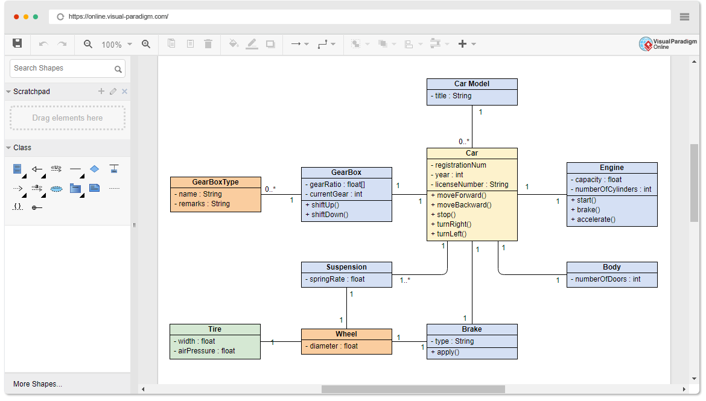
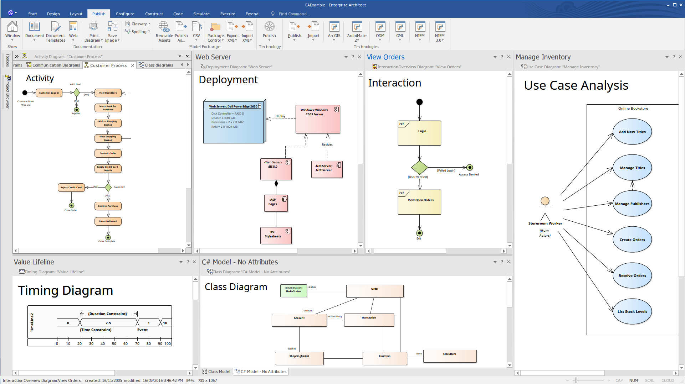

upper case tööriistad keskenduvad systeemiarenduse esimestele etappidele, nt kasutaja vajaduste kogunemine ja dokumenteerimine
systeemi arhitektuuri ja protsesside visualiseerimiseks, diagrammide loomine ja dokumentatsiooni genereerimine
ise olen nt kasutanud IntelliJ-s uml diagrammi loomist ja andmebaasi skeemi disaini. vscodes ka sql-i haldust
U-CASE tool, mida pole kasutanud: visual paradigm, kasutatakse uml diagrammideks ja andmemudeliteks. samuti kasutaja nõuete dokid.
pole kasutanud ka enterprise architecti,kasutatakse systeemi arhitektuuri modelleerimiseks ja andmebaasi disainimine.

